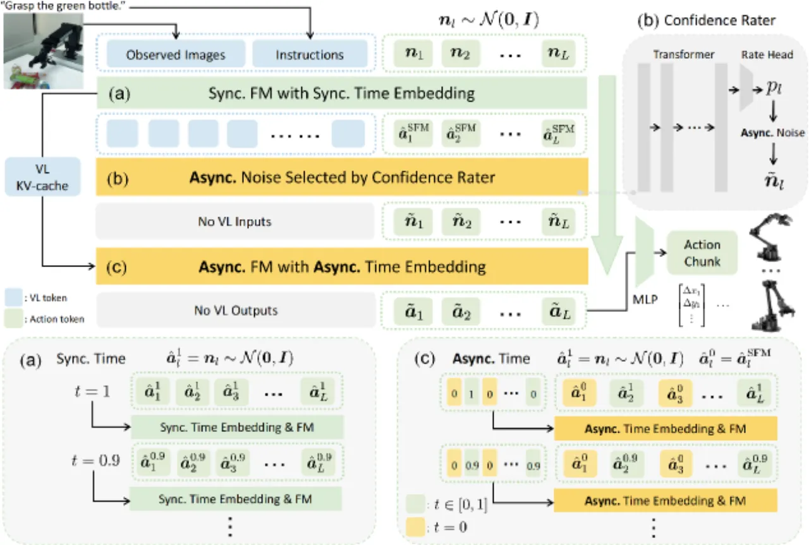
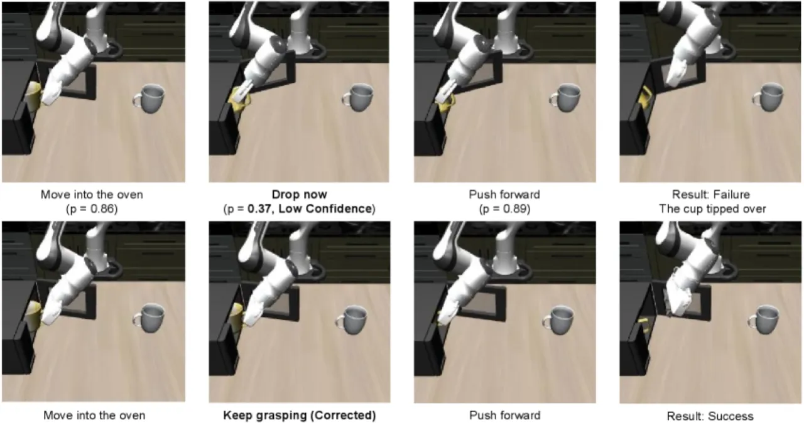
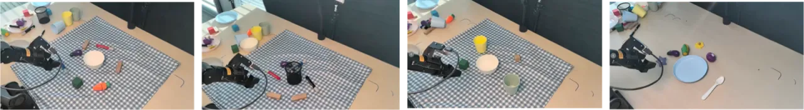
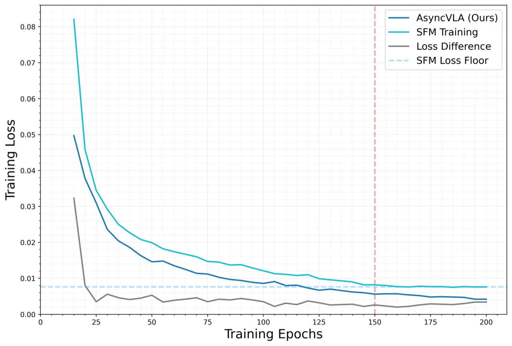
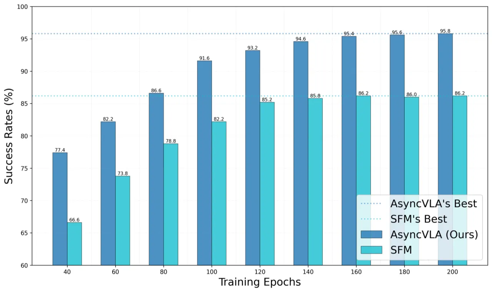

VLA 模型（Vision-Language-Action）在机器人操控中取得显著进展，但现有基于 flow matching 的方法采用统一时间步对所有 action token 同步去噪，缺乏对动作质量的自我感知与纠错能力。AsyncVLA 引入异步流匹配框架：先用同步 SFM 生成初始动作，再由置信度评估器识别低置信度 token，最后通过 AFM 有选择地重新生成这些 token，实现 VLA 模型的自校正能力，显著提升长程任务成功率。
同步流匹配（SFM）对所有 action token 使用统一去噪时间步，既无法感知动作上下文，也缺乏自我纠错机制——一旦某个 token 产生偏差，长程任务中的错误会级联累积，导致任务失败。
"Conventional VLA models with synchronous flow matching use a rigid, monolithic denoising schedule that lacks action context awareness and self-correction mechanisms, making it unstable for long-horizon tasks where single errors cascade into failure."

AsyncVLA 采用两阶段推理：第一阶段，同步流匹配（SFM）从纯高斯噪声出发，经 10 步 Euler 积分生成初步动作序列；第二阶段，置信度评估器（Confidence Rater）对每个 token 打分，将低置信 token 重置为高斯噪声后，异步流匹配（AFM）仅对这部分 token 再次去噪，高置信 token 保持不变以提供上下文约束。整个框架使用单个统一模型，SFM 与 AFM 共享参数。

Confidence Rater 由 4 层 Transformer 加线性输出头组成（308M 参数，占总参数量 4.08B 的 7.56%），以视觉语言隐状态与 SFM 生成的动作为输入，输出每个 token 的置信度分数 q∈[0,1]。训练时使用基于相对 MSE 的伪标签：
"qt:t+L = 1 − α − β × (et:t+L − min{el}) / (max{el} − min{el} + ε)"
参数 α=0.01，β=0.98，确保标签范围始终在 [0.01, 0.99] 之内。置信度低于阈值 T=0.5 的 token 被掩码，交由 AFM 重新生成。
AFM 推理时，未掩码 token（ml=0）直接保留 SFM 输出，掩码 token（ml=1）重新采样高斯噪声并执行 10 步 Euler 更新。为让 Transformer 同时处理混合去噪状态，引入异步时间嵌入：对 τ⊙m 进行 sinusoidal 编码，区分已完成去噪与仍需去噪的 token。通过复用 SFM 阶段的 vision-language KV-cache，AFM 阶段仅需 10.1 ms（vs. SFM 的 83.2 ms），效率极高。
以 SFM 为"全掩码 AFM 的特殊情况"进行统一训练：随机 Bernoulli 采样动作掩码，将 SFM 与 AFM 纳入同一训练过程，实现隐式数据增强。未掩码的上下文 token 加入小幅噪声扰动（σc=0.05），缩小训练与测试分布的差距；FM 时间步从 Beta(1.5, 1) 分布采样，重点覆盖噪声较多的步骤。
评估涵盖仿真 benchmark（LIBERO 4 套件、WidowX、Google Robot）与真实世界机器人（AgileX PiPER，4 项任务各 50 次试验）。骨干为 Qwen2.5-VL-3B-Instruct，SFM 与 AFM 各 10 步去噪。
| 方法 | Spatial | Object | Goal | Long | 平均 |
|---|---|---|---|---|---|
| π0.5 | 99.6 | 99.7 | 98.3 | 90.0 | 96.9 |
| dVLA | 98.5 | 98.6 | 96.8 | 91.8 | 96.4 |
| Discrete-Diffusion VLA | 98.9 | 99.3 | 97.6 | 89.4 | 96.3 |
| AsyncVLA（本文） | 99.4 | 99.8 | 99.2 | 91.2 | 97.4 |
| 方法 | 平均成功率 |
|---|---|
| UD-VLA | 62.5% |
| OpenVLA-OFT | — |
| AsyncVLA（本文） | 70.8% |

| 任务 | OpenVLA-OFT | π0.5 | AsyncVLA（本文） |
|---|---|---|---|
| Carrot→Bowl | 72.0% | 88.0% | 94.0% |
| Pen Extraction | 72.0% | 84.0% | 86.0% |
| Pour Water | 60.0% | 72.0% | 82.0% |
| Spoon→Plate | 58.0% | 64.0% | 86.0% |
| 平均 | 65.5% | 77.0% | 87.0% |


| 配置 | WidowX 平均成功率 |
|---|---|
| SFM only (10 steps) | 47.9% |
| SFM only (20 steps) | 51.1% |
| AFM without confidence rater | 62.5% |
| With TSI labeling | 64.6% |
| Delta refinement variant | 61.5% |
| Direct refinement variant | 62.5% |
| Without unified training | 7.3% |
| Full AsyncVLA | 70.8% |
关键发现：基于 MSE 的置信度标签（70.8%）显著优于任务成功指示符标签（TSI，64.6%），表明稠密监督信号对 token 级精细校正至关重要。去掉统一训练策略后成功率骤降至 7.3%，说明该训练设计不可或缺。
| 组件 | 耗时（ms） | 占比 |
|---|---|---|
| SFM（10 步） | 83.2 ± 1.4 | 86.8% |
| Confidence Rater | 2.6 ± 0.1 | 2.7% |
| AFM（10 步，KV-cache 复用） | 10.1 ± 0.3 | 10.5% |
| 总计 | 95.9 ± 1.6 | 100% |
置信度评估器使用的是 chunk 内相对 MSE 归一化伪标签。当整个 action chunk 的预测都存在较大误差时，相对排序仍能识别"相对较好"的 token，但无法感知绝对误差量级。作者指出需要结合绝对误差感知的校准方案解决此类 corner case。
AsyncVLA 的异步流匹配框架在设计上具有通用性，但当前实验验证仅覆盖机器人操控任务（LIBERO、WidowX、Google Robot、AgileX PiPER），尚未在语言生成、图像生成等其他序列任务上验证其有效性。
尽管 AFM 通过 KV-cache 复用将额外延迟控制在 10.1 ms（总推理 95.9 ms），相比 SFM 单独推理（83.2 ms）仍增加约 15.3% 的延迟。在对实时性要求极高的场景（如高频控制）中，该开销需酌情权衡。（此条为从设计中推断，inferred from design。）